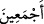

(__WORD__), (__WORD__) harfini ve ona mâtuf olanları tekîd eder. Cehennemi dalâlette kendisine
tâbi olunanlar ve tâbi olanların tamamıyle hiçbirini dışarıda bırakmaksızın
dolduracağım, demektir.
et-Te’vîlâtü’n-Necmiyye’de der ki: İblis, Allah’a karşı gelmekte ısrar edip Âdem’e
secde etmekten geri durunca, kendisini ilâhî lânete müstehak kılan çok daha çirkin bir
işi yapacağına yemin etti ve Hak ile son derece cür’etli bir şekilde konuştu. Cenâb-ı
Hak da şöyle buyurdu: “Gerçektir ve ben gerçek olarak diyorum ki: Cehennemi hem
senin soyundan, hem de onlardan sana uyanlarla dolduracağım!”
Bu durumda aklı başında olanların yapması gereken, gerek söz gerekse fiil olarak
güzel ve edebli hareketlerle bezenmeye çalışmak ve Allah’a karşı kesinlikle cür’etli
davranışlara girişmemektir. Akıllı kimselerin, şeytanla birlikte cehenneme girmemek
için onun adımlarına tâbi olmaması gerekir.
Ebû Mûsa el-Eş’arî’den mervidir ki: Sabah vakti girince İblis askerlerini yeryüzüne
dağıtarak şöyle der: Her kim bir müslümanı yolundan saptırırsa, ona bir taç
giydireceğim. Aradan belli bir zaman geçtikten sonra bir asker: Biriyle o kadar uğraştım
ki adam nihâyet karısını boşadı, der. Ama İblis, adam yakında yine evlenir, der. Bir
diğeri: Biriyle o kadar uğraştım ki adam sonunda ana-babasına karşı gelip ikisine veya
sadece birisine isyan etti, der. Muhtemeldir ki, der, İblis, yakında iyi ahlâklı bir adam
olur. Bir başkası, biriyle o kadar uğraştım ki sonunda içki içirmeye muvaffak oldum,
deyince İblis, İşte bu! der. Yâni, Sen gerçekten razı olacağım büyük bir iş başardın! Bir
diğeri de der ki: Biriyle o kadar uğraştım ki sonunda zinâ etti, deyince, ona da sensin
işte! der. Bir başka asker, ben de biriyle o kadar uğraştım o kadar uğraştım ki sonunda
birini öldürdü, deyince İblis, sensin işte sen! Yâni en büyük işi sen becerdin; benim en
yüksek dileğimi sen yerine getirdin ve eksiksiz rızâmı sen kazandın! der.
İblis’i en çok razı eden şeyin bir cana kıymak oluşunun sebebi, cana kıyma karşısında
vârid olan ilâhî tehdîdin en şiddetli ve en büyük tehdîd olmasıdır. Allah buyurur ki:
“Kim bir mü’mini kasden öldürürse, cezâsı, içinde ebedî kalacağı cehennemdir.
Allah, ona gazap etmiş, lânet etmiş ve onun için büyük bir azap hazırlamıştır.” (en-
Nisâ 4/93).
İşte bu sebepledir ki, İblis “sensin işte sen!” diyerek “sen” kelimesini iki kez
tekrarlamak sûretiyle bu askerinden son derece razı olduğunu ifâde etmiştir.
Bir şeyhin şöyle dediği rivâyet edilir: Şeytanın, kendisi hakkında en çok ağladığı kişi,
dünyada kendisi için hazırladığı fitnelerden kurtularak ölebilen bir mü’mindir. Denir ki:
Allah Teâlâ, İblis’e o mâhûd müddeti tanıyıp onu yeryüzüne indirince, kendisine
dünyanın tüm bölgelerini verip gösterdi; onun ise ilk baktığı yer dağlar oldu. İşbu
bakışın uğursuzluğundandır ki, o zamandan beri su, taşları tutamayıp en derin kısmına
gönderir. İblis’in dîni üzere olanlar da sırât-ı müstakim üzere tutunamayıp aşağıların en
aşağısına (esfel-i sâfilîn) inerler. Hem insan olup hem de İblis’le birlikte cehenneme
düşenler kendilerine ne kadar yazık etmektedir!